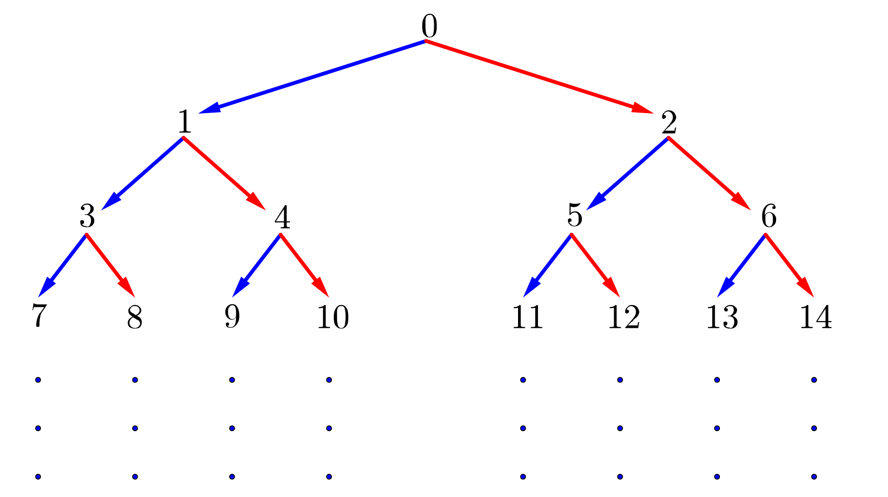
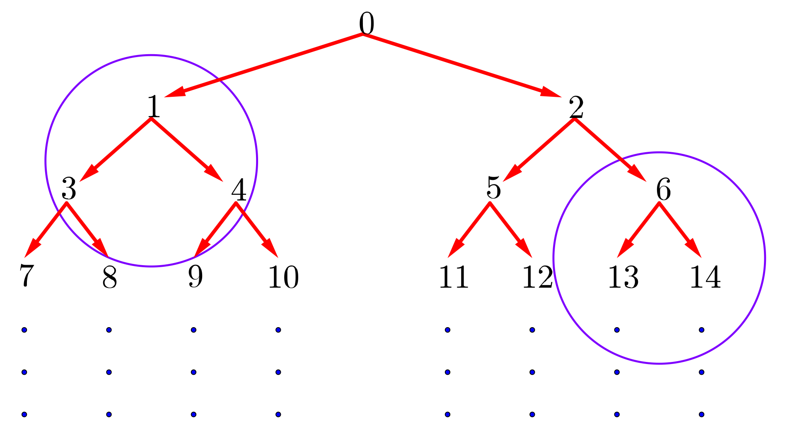

Problem of the Week
Problem D and Solution
Follow the Path
Problem
Consider the following number tree.
In this number tree, the integers greater than or equal to 0 are written out in increasing order, with the top row containing one integer and every row after containing twice as many integers as the row above it.

Each integer is connected to two integers in the row below, one down and to the left and one down and to the right, as shown in the tree. For example, the number 5 is connected to the number 11 (down to the left) and the number 12 (down to the right) in the row below. Notice that we can get from 0 to 12 by going down right (R), down left (L), then down right (R).
Determine the integer you end at when you take the following path from 0: \[\mbox{R}\rightarrow \mbox{R}\rightarrow \mbox{R}\rightarrow \mbox{R}\rightarrow \mbox{R}\rightarrow \mbox{L}\rightarrow \mbox{L}\rightarrow \mbox{R}\rightarrow \mbox{L}\rightarrow \mbox{R}\]
Solution
Solution 1
At first it may not be obvious how to proceed. We can see from the given diagram that \(\mbox{R}\rightarrow \mbox{R}\rightarrow \mbox{R}\) takes us from 0 to 2 to 6 to 14. But from there where do we go? We could write out more rows of the tree until we are able to make the required number of moves and then read off the final answer. This approach would work for a relatively small number of moves but would not be practical in general for “longer” strings of moves.
We will proceed by making an observation. When we perform a move to the left (L) from any number, we end up at an odd number. When we perform a move to the right (R) from any number, we end up at an even number. Is there a general formula which can be used when asked to move left (L)? Is there a general formula which can be used when asked to move right (R)?
The diagram has two parts of the tree circled.

Can we discover a pattern that takes us from each initial number to the odd and even numbers below? To get from 1 to 3 we could add 2 and to get from 1 to 4 we could add 3. But doing the same with 6 would not get us to 13 and 14. As we go down the tree, each new row has twice as many numbers as the row above. Let’s try multiplying the initial number by 2 and then seeing what is necessary to get to the odd and even number below. If we double 1 we get 2. Then we would need to add 1 to get to the odd number 3 below and add 2 to get to the even number 4 below. Does this work with the 6? If we double 6 and add 1, we get 13. It appears to work. If we double 6 and add 2, we get 14. It also appears to work.
So it would appear that if we make a move left (L) from any number \(a\) in the tree, the resulting number is one more than twice the value of \(a\). That is, a move left (L) from \(a\) takes us to the number \(2a+1\) in the tree.
It would appear that if we make a move right (R) from any number \(a\) in the tree, the resulting number is two more than twice the value of \(a\). That is, a move right (R) from \(a\) takes us to the number \(2a+2\) in the tree.
These results are true but unproven. This relationship has worked for all of the rows we have sampled but we have not proven it true in general. You will have to wait for some higher mathematics to be able to prove that this is true in general.
The following table shows the result of performing the given sequence of moves \[\mbox{R}\rightarrow \mbox{R}\rightarrow \mbox{R}\rightarrow \mbox{R}\rightarrow \mbox{R}\rightarrow \mbox{L}\rightarrow \mbox{L}\rightarrow \mbox{R}\rightarrow \mbox{L}\rightarrow \mbox{R}\]
| Initial Number | Move | Calculation | Next Number |
|---|---|---|---|
| 0 | R | \(2(0)+2\) | 2 |
| 2 | R | \(2(2)+2\) | 6 |
| 6 | R | \(2(6)+2\) | 14 |
| 14 | R | \(2(14)+2\) | 30 |
| 30 | R | \(2(30)+2\) | 62 |
| 62 | L | \(2(62)+1\) | 125 |
| 125 | L | \(2(125)+1\) | 251 |
| 251 | R | \(2(251)+2\) | 504 |
| 504 | L | \(2(504)+1\) | 1009 |
| 1009 | R | \(2(1009)+2\) | 2020 |
Starting at 0 and making the moves \(\mbox{R}\rightarrow \mbox{R}\rightarrow \mbox{R}\rightarrow \mbox{R}\rightarrow \mbox{R}\rightarrow \mbox{L}\rightarrow \mbox{L}\rightarrow \mbox{R}\rightarrow \mbox{L}\rightarrow \mbox{R}\), we end at the number 2020.
Once we determined the operations required to make a move left (L) and a move right (R), the problem was quite straightforward to solve. It would be possible to write a computer program which would accept any length sequence of Ls and Rs, and get the computer to determine the final position in this specific tree.
A solution that does not require the use of the unproven result is provided on the next page.
Solution 2
By following the given directions, we will end up in row 11 of the tree. So we first determine which integers are in row 11.
To get from the top integer to the rightmost integer in row 2, add 2. To get from the rightmost integer in row 2 to the rightmost integer in row 3, add 4. To get from the rightmost integer in row 3 to the rightmost integer in row 4, add 8. These numbers which are added correspond to the number of integers in that next row. We will find the rightmost integer in row 10 and the rightmost integer in row 11.
The rightmost integer in row 10 is: \(0+2+4+8+16+32+64+128+256+512=1022\).
The rightmost integer in row 11 is: \(0+2+4+8+16+32+64+128+256+512+1024=2046\).
It follows that row 11 contains the 1024 integers from 1023 (1 more than the last integer in row 10) to 2046 (the rightmost integer in row 11), inclusive.
Now we look at the commands to narrow down where we will be in the 11th row.
The first R will take us to the right half of the number range 1023 to 2046, namely 1535 to 2046, 512 possible numbers.
The second R will take us to the right half of the number range 1535 to 2046, namely 1791 to 2046, 256 possible numbers.
The third R will take us to the right half of the number range 1791 to 2046, namely 1919 to 2046, 128 possible numbers.
The fourth R will take us to the right half of the number range 1919 to 2046, namely 1983 to 2046, 64 possible numbers.
The fifth R will take us to the right half of the number range 1983 to 2046, namely 2015 to 2046, 32 possible numbers.
The first L will take us to the left half of the number range 2015 to 2046, namely 2015 to 2030, 16 possible numbers.
The second L will take us to the left half of the number range 2015 to 2030, namely 2015 to 2022, 8 possible numbers.
The sixth R will take us to the right half of the number range 2015 to 2022, namely 2019 to 2022, 4 possible numbers.
The third L will take us to the left half of the number range 2019 to 2022, namely 2019 to 2020, 2 possible numbers.
The final R will take us to the right half of the number range 2019 to 2020, namely 2020, our final destination.
Therefore we end up at 2020, a number in the 11th row of the tree.